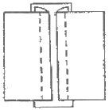
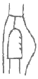
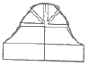
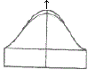
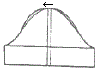
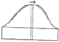
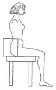

패션디자인산업기사 (2009-03-01 기출문제)
1과목: 피복재료학
1. 메리야스라고 널리 불리어지며, 실로 고리를 만들고 이 고리에 실을 걸어서 새 고리를 만드는 것을 되풀이하여 만든 피륙은?
- 편성물
- 직물
- 브레이드
- 레이스
(정답률: 알수없음)

2. 편성물을 직물과 비교했을 때의 특성으로 틀린 것은?
- 신축성이 크다.
- 유연성이 좋다.
- 구김이 잘 생기지 않는다.
- 형태안정성이 좋다.
(정답률: 알수없음)
3. 수지가공한 직물의 장점으로 틀린 것은?
- 섬유의 마찰강력, 인장강력이 증가한다.
- 세탁수축이 적다.
- 염색포의 세탁, 마찰견뢰도가 향상 된다.
- 광택 또는 형태고정효과가 있다.
(정답률: 알수없음)
4. 위편성물 중 유아복에 가장 적합한 기본 조직은?
- 펄편
- 터크편
- 평편
- 고무편
(정답률: 알수없음)
5. 다음 중 섬유의 단면이 삼각형일 때 가장 관계가 깊은 현상은?
- 신도
- 대전성
- 흡습성
- 광택
(정답률: 알수없음)
6. 다음 중 면, 양모 등과 홈방에 가장 많이 사용되는 섬유는?
- 폴리에스테르
- 아세테이트
- 나일론
- 아크릴
(정답률: 알수없음)
7. 다음 중 실을 만드는 원료섬유의 종류에 따라 실을 분류한 것은?
- 방적사, 필라멘트사
- 모사, 면사
- 생사, 견사
- 편성사, 수편사
(정답률: 알수없음)
8. 다음 중 동일한 섬유일 때 가장 딱딱하고 까슬까슬한 실은?
- 10tpi
- 20tpi
- 40tpi
- 80tpi
(정답률: 알수없음)
9. 세리신과 피브로인으로 구성된 섬유는?
- 면
- 견
- 마
- 양모
(정답률: 알수없음)
10. 위사에 강연사를 사용해서 짜여진 직물은?
- 조젯 크레이프
- 케임브릭
- 옥스퍼드
- 개버딘
(정답률: 알수없음)
11. 다음 중 표준수분율과 공정수분율이 같은 섬유는?
- 면
- 양모
- 폴리에스테르
- 나일론
(정답률: 알수없음)
12. 다음 중 열전도성이 좋고 초기탄성률이 커서 여름용 옷감으로 적당한 섬유는?
- 폴리에스테르
- 폴리우레탄
- 비스코스레이온
- 아마
(정답률: 알수없음)
13. 섬유의 단면형태에 가장 많은 영향을 받는 성질은?
- 열전도성
- 강도
- 대전성
- 피복성
(정답률: 알수없음)
14. 일반적으로 사용되는 재봉사의 합사수는?
- 3합연사
- 4합연사
- 5합연사
- 6합연사
(정답률: 알수없음)
15. 다음 중 열가소성이 우수한 섬유는?
- 폴리에스테르
- 양모
- 면
- 비스코스레이온
(정답률: 알수없음)
16. 다음 중 면직물의 가공방법이 아닌 것은?
- 머서화 가공
- 리플 가공
- 런던슈렁크 가공
- 샌퍼라이즈 가공
(정답률: 알수없음)
17. 일반적으로 자카드직기에 의해 제직되는 직물이 아닌 것은?
- 양단(洋緞)
- 피케(pique)
- 대머스크(damask)
- 브로케이드(brocade)
(정답률: 알수없음)
18. 모드아크릴 섬유로 만든 직물에 대한 성질의 설명으로 틀린 것은?
- 다른 합성섬유에 비해 필링이 잘 생기지 않는다.
- 내연성이 나쁘다.
- 레질리언스가 좋다.
- 유기용매에 대한 저항성은 좋으나 아세톤에 용해된다.
(정답률: 알수없음)
19. 다음 중 복잡한 무늬를 나타내는데 이용되는 장치는?
- 방적기
- 자카드직기
- 수직기
- 환편기
(정답률: 알수없음)
20. 얇고 가벼워 보이는 직물에 광택이 있는 딱딱한 느낌을 부여하는 가공은?
- 실켓 가공
- 큐어링 가공
- 오건디 가공
- 엠보싱 가공
(정답률: 알수없음)
2과목: 패션디자인론
21. 근대 디자인의 3대 운동이 아닌 것은?
- 미술공예운동(Arts & Crafts Movement)
- 아르누보(Art Nouveau)
- 시세션(Secession)
- 바우하우스(Bauhaus)
(정답률: 알수없음)
22. 디자인 원리 중의 하나인 리듬에서 플리츠 스커트가 해당되는 리듬은?
- 교체 리듬
- 반복 리듬
- 점진 리듬
- 방사 리듬
(정답률: 알수없음)
23. 다음 중 장신구에 속하지 않는 것은?
- 모자
- 핸드백
- 구두
- 레깅스
(정답률: 알수없음)
24. 감법혼색의 특징이 아닌 것은?
- 색을 혼합하면 할수록 명도가 낮아진다.
- 근거리 색상의 혼합은 중간색이 나타난다.
- 보색끼리의 혼합은 검정색에 가깝다.
- 원거리 색상의 혼합은 명도가 높아진다.
(정답률: 알수없음)
25. 역사적인 조형양식을 부정하는 운동으로 자연에서 모티브를 찾아 유연하고 유동적인 S 곡선을 특징으로 하였던 것은?
- 미술공예운동
- 시세션
- 바우하우스
- 아르누보
(정답률: 알수없음)
26. 의복의 직선이 주는 느낌을 가장 옳게 표현한 것은?
- 부드럽고 자유스럽게 표현된다.
- 유연하고 우아하다.
- 고상하고 섬세하며 여성적인 느낌을 준다.
- 딱딱하고 강한 느낌을 준다.
(정답률: 알수없음)
27. 다음 중 강조의 정도를 가장 적게 필요로 하는 의복은?
- 정장
- 캐주얼 웨어
- 스포츠 웨어
- 통근복
(정답률: 알수없음)
28. 다음 중 어패럴에서 요구되는 소재의 특성이 아닌 것은?
- 기능성
- 심미성
- 경제성
- 제복성
(정답률: 알수없음)
29. 인간에게 장착되는 피복류 전반과 부속 장식품 일체를 포함한 모든 종류의 물건을 의미하는 가장 포괄적인 개념은?
- 복식
- 의상
- 복장
- 의복
(정답률: 알수없음)
30. 면직물이나 마직물을 디자인할 때 고려할 사항과 가장 거리가 먼 것은?
- 청결한 느낌을 받을 수 있도록 디자인한다.
- 용도에 따라 재료의 성질을 디자인한다.
- 무늬를 사용해서 디자인한다.
- 트리밍을 강조하여 디자인한다.
(정답률: 알수없음)
31. 비례의 원리를 적용시켜 재킷의 길이를 결정할 때 재킷의 길이로 가장 적합한 위치는?
- 재킷의 길이가 의복 전체의 1/2과 2/3 사이에 달이도록 한다.
- 재킷의 길이가 의복 전체를 2등분하도록 한다.
- 재킷의 길이가 의복 전체의 2/3보다 길게 한다.
- 재킷의 길이가 의복 전체의 1/3보다 짧게 한다.
(정답률: 알수없음)
32. 의복의 기능을 도구적 기능과 표현적 기능으로 나눌 때 다음 중 표현적 기능에 해당되는 의복은?
- 회사 유니폼
- 비행 조종사복
- 소방대원 의복
- 전기기사 의복
(정답률: 알수없음)
33. 부분과 부분이 분리될 수 없으며 상호 종속적이고 모두가 부합되어 서로 보완적인 효과를 거두는 디자인의 원리는?
- 강조
- 균형
- 리듬
- 통일
(정답률: 알수없음)
34. 다음 중 대비효과의 특징이 아닌 것은?
- 명도대비가 최대가 될 때 색상대비가 가장 강하게 나타난다.
- 대비효과는 배경색의 크기가 크고 중심색의 크기가 어느 정도 적을수록 현저하게 나타난다.
- 대비효과는 두 색 사이의 간격이 있어도 나타나나 간격이 커지면 감소한다.
- 색상대비는 색상차가 클 때 증가한다.
(정답률: 알수없음)
35. 다음 중 X자형 실루엣이 아닌 것은?
- 아워글라스 실루엣(Hourglass S.)
- 프린세스 실루엣(Princess S.)
- 피트 앤드 플레어 실루엣(Fit and Flare S.)
- 튜블러 실루엣(Tubular S.)
(정답률: 알수없음)
36. 색채의 강약, 농담의 상태를 하나의 개념으로 묶어서 동시에 파악할 수 있는 색의 상태로 색의 이미지를 쉽게 전달하고자 정리한 것은?
- 명도
- 채도
- 색상
- 톤(tone)
(정답률: 알수없음)
37. 패션 일러스트레이션의 용도 중 디자인의 의도를 정확하게 알려 효율적이고 체계적인 생산체계를 갖추게 하는 패션 일러스트레이션은?
- 패턴복 정보를 위한 패션 일러스트레이션
- 의복제작을 위한 패션 일러스트레이션
- 정식과 전시를 위한 패션 일러스트레이션
- 선전ㆍ광고를 위한 패션 일러스트레이션
(정답률: 알수없음)
38. 인체의 형태 중 전제적 포즈를 경정하는 데 가장 중요한 골격은?
- 척주
- 쇄골
- 견갑골
- 상완골
(정답률: 알수없음)
39. 디자인의 조건 중 합목적성에 해당되지 않는 것은?
- 물리적 기능
- 생리적 기능
- 심리적 기능
- 경제적 기능
(정답률: 알수없음)
40. 얼굴 그리기에서 눈의 위치는? (단, L은 남자 및 여자의 얼굴 길이이다.)
- 1/3L
- 1/2L
- 2/3L
- 3/5L
(정답률: 알수없음)
3과목: 의류상품학 및 복식문화사
41. 1850년대에 일어난 남자 의복의 가장 큰 변화는 남자들의 코트와 바지를 다른 색과 옷감으로 만들어 오던 것을 한 가지 옷감으로 만들게 된 것으로, 1859년에 처음으로 바지, 코트, 조끼를 모두 동일 색과 직물로 만들어 소개된 것은?
- 프록 코트(frock coat)
- 디토 슈트(ditto suit)
- 맥시 코트(maxi coat)
- 개릭(garrick)
(정답률: 알수없음)
42. 패션에 필요한 시장정보의 내용이 아닌 것은?
- 소매점 정보
- 소매점 바이어의 예측정보
- 구매동기 및 구매패천 정보
- 경쟁사 정보
(정답률: 알수없음)
43. 패션마케팅의 새로운 흐름이 아닌 것은?
- 관계마케팅
- 욕구마케팅
- 체험마케팅
- 공동마케팅
(정답률: 알수없음)
44. 다음 중 상품구성의 폭을 결정하는 요소가 아닌 것은?
- 고객층에 의한 결정
- 상품의 유행성에 의한 결정
- 생산성에 의한 결정
- 업종의 특성에 의한 결정
(정답률: 알수없음)
45. 르네상스 시대의 복식으로 뿌르쁘웽(pourpoint) 안에 착용한 흰색 린넨과 실크로 만든 옷으로, 품이 넓고 비숍 슬리브가 달린 것은?
- 셔츠
- 져킨
- 바지
- 외투
(정답률: 알수없음)
46. 국제유행색협회의 국제 유행색 결정 시기는?
- 24개월 전
- 18개월 전
- 12개월 전
- 6개월 전
(정답률: 알수없음)
47. 아르누보 양식의 복식으로 여성의 힙을 최대한으로 과장 되게 부풀린 실루엣은?
- 엠파이어 스타일
- 로맨틱 스타일
- 크리놀린 스타일
- 버슬 스타일
(정답률: 알수없음)
48. 크라바트(cravat)에 대한 설명으로 옳은 것은?
- 추울 때 방한의 목적으로 사용되었다.
- 오늘날 넥타이의 근원이 되었다.
- 그리스 시대부터 착용되었다.
- 소재로는 반드시 면(cotton)만을 사용하였다.
(정답률: 알수없음)
49. 다음 중 제품포지셔닝맵의 유용성이 아닌 것은?
- 틈새시장 파악이 가능하다.
- 경쟁사의 포지션에 대한 파악이 가능하다.
- 마케팅믹서의 효과측정이 가능하다.
- 소비자의 라이프스타일 파악이 가능하다.
(정답률: 알수없음)
50. 다음 중 근대 복식의 양식이 아닌 것은?
- 로마네스크 양식
- 낭만주의 양식
- 아르누보 양식
- 크리놀린 양식
(정답률: 알수없음)
51. 패션마케팅의 핵심개념이 아닌 것은?
- 필요와 욕구
- 가치와 만족
- 제품포지셔닝
- 패션제품
(정답률: 알수없음)
52. 고대 이집트의 복식 중 하얀 린넨으로 만든 단순한 사각형의 긴 스카프를 허리에 두르고 벨트 등으로 고정한 형태는?
- 로인클로스
- 쉬스 스커트
- 칼라시리즈
- 하이크
(정답률: 알수없음)
53. 다음 중 패션의 특성에 해당되지 않는 것은?
- 패션에는 사이클이 있다.
- 패션은 변화하고, 그 변화의 상태는 점진적이다.
- 패션은 모방에 의해 전파된다.
- 패션의 전파 형태는 패션에서 정착되거나 소멸된다.
(정답률: 알수없음)
54. 로마네스크 양식의 의복이 아닌 것은?
- 블리오(bliaud)
- 쉥즈(chainse)
- 쉬르코(surcot)
- 코르사주(corsage)
(정답률: 알수없음)
55. 패션산업계의 구조 중 유통단계에 해당되는 것은?
- 원사 메이커
- 원단 상사
- 어패럴 메이커
- 도매상
(정답률: 알수없음)
56. 다음 중 그리스 복식의 특징이 아닌 것은?
- 체형 그대로의 아름다움을 중시하는 의복이었다.
- 전체적으로 균형 잡힌 실루엣을 이루었다.
- 남녀 구별이 뚜렷하였다.
- 직사각형 천을 몸에 두르거나 감싸는 형태였다.
(정답률: 알수없음)
57. 14세기 고딕 양식의 복식이며, 남녀가 착용한 옷으로, 칼라는 귀에 닿을 정도로 높았고, 품은 넓어 허리에 벨트를 매면 주름이 파이프 오르간처럼 생겨 방사선 모양으로 퍼져 나가 주름의 미를 볼 수 있는 것은?
- 뿌르쁘웽(pourpoint)
- 우뿔랑드(houppelande)
- 쉬르꼬(surcot)
- 로브(robe)
(정답률: 알수없음)
58. 패션 프로모션 전략에서 인적판매의 과정에 해당되지 않는 것은?
- 준비
- 구매와 예측
- 판매제시
- 홍보
(정답률: 알수없음)
59. 패션생활에서 생활구조적 요소인 라이프스페이스(life-space)의 구분으로 틀린 것은?
- 제1피부-옷관리
- 제2피부-옷차림
- 제3피부-주거환경
- 제4피부-생활환경
(정답률: 알수없음)
60. 패션의 전파 단계로 옳은 것은?
- 모드→스타일→패션
- 스타일→패션→모드
- 패션→스타일→모드
- 모드→패션→스타일
(정답률: 알수없음)
4과목: 패턴공학 및 의복구성학
61. 다음 중 손바느질 방법이 아닌 것은?
- 공그르기
- 가름솔
- 새발뜨기
- 홈질
(정답률: 알수없음)
62. 다음 중 플랫칼라(flat collar)의 스탠드분을 조절할 수 있는 경우는?
- 칼라의 너비
- 목둘레선의 길이
- 앞목과 뒤목둘레선의 차이
- 앞길과 뒤길의 어깨선의 겹치는 양
(정답률: 알수없음)
63. 인체의 구조에서 상지(上肢)에 해당하는 부위는?
- 경부(脛部)
- 수부(手部)
- 복부(腹部)
- 족부(足部)
(정답률: 알수없음)
64. 다음 그림에서 해당되는 뉜솔은?

- 싱글 심
- 더블 심
- 슬롯 심
- 웰트 심
(정답률: 알수없음)
65. 다음 그림과 같이 소매 앞쪽에서 소매산을 향하여 주름이 생기는 경우의 보정방법으로 옳은 것은?





(정답률: 알수없음)
66. 한 가닥의 재봉사를 사용하여 회전 루퍼의 1회전으로 봉환이 형성되며 신축성이 풍부하여 편성물의 봉제, 가봉, 라벨 봉제에 사용되는 재봉기는?
- 단환봉 재봉기
- 본봉 재봉기
- 이중환봉 재봉기
- 오버록 재봉기
(정답률: 알수없음)
67. 다음 중 프린세스 라인의 구성으로 틀린 것은?
- Shoulder dart-Waist dart:A형
- Arm hole dart-Waist dart:B형
- Shouder point dart-Waist dart:D형
- Under arm dart-Waist dart:E형
(정답률: 알수없음)
68. 의복 원형의 기능상 기본 원형에 해당되지 않는 것은?
- 길(bodice)
- 소매(sleeve)
- 스커트(skirt)
- 슬랙스(slacks)
(정답률: 알수없음)
69. 다음 그림과 같이 의자에 앉아 옆 허리선부터 실루엣을 따라 의자바닥까지의 길이는 재는 계측항목은?

- 엉덩이 길이
- 밑위길이
- 바지길이
- 총길이
(정답률: 알수없음)
70. 인체를 계측하는 방법 중 간접법이 아닌 것은?
- 입체사진 계측법
- 등고선법
- 실루엣터(silhouetter)법
- 퓨즈법
(정답률: 알수없음)
71. 다음 중 바이어스(bias)로 재단해야 하는 칼라는?
- 스포츠(sprts) 칼라
- 세일러(sailor) 칼라
- 리본(ribbon) 칼라
- 플랫(flat) 칼라
(정답률: 알수없음)
72. 공정분류시 장점에 해당되지 않는 것은?
- 작업개선을 위한 기초자료를 제공한다.
- 공정관리를 위한 기초자료를 제공한다.
- 공정순을 분명히 한다.
- 가공자의 이름을 분명히 한다.
(정답률: 알수없음)
73. 본봉 땀(lock stitch)의 특성으로 틀린 것은?
- 땀의 앞뒤가 같다.
- 시침이나 자루 및 포대의 입박기 또는 상표달기에 쓰인다.
- 땀의 구성이 한 땀별로 독립되어 있으므로 잘 풀리지 않는다.
- 가장 널리 쓰이는 땀으로 가정에서 흔히 쓰는 재봉기의 땀이 이에 속한다.
(정답률: 알수없음)
74. 블라우스를 가봉할 때 주의할 점으로 틀린 것은?
- 면사 한 올로 상침 시침한다.
- 소매는 소매 완성선에서 0.2cm 떨어져서 소매 밑 4cm~5cm까지 촘촘하게 홈질하여 오그린다.
- 칼라는 가봉 전에 재단하고 가봉시 칼라 모양을 조절한다.
- 밑단은 한 번 접어 시침한다.
(정답률: 알수없음)
75. 본봉 재봉기의 기구 중 소재를 앞으로 또는 뒤로 보낼 때 방향을 잘 잡도록 적당한 압력으로 소재를 톱니에 밀착시키는 기구는?
- 노루발 기구
- 실채기 기구
- 북 기구
- 바늘대 기구
(정답률: 알수없음)
76. 장식적인 잔주름을 잡는데 쓰이며, 여러 줄의 잔주름을 나타내는데 사용되는 장식봉은?
- 개더(gather)
- 셔링(shirring)
- 스모킹(smocking)
- 패거팅(fagoting)
(정답률: 알수없음)
77. 겉감의 각 부위 기본 시접으로 틀린 것은?
- 소매단 : 3cm
- 진동둘레 : 1.5cm
- 허리선 : 1.5cm
- 목둘레 : 3cm
(정답률: 알수없음)
78. 다음 중 퍼커링(puckering)이 가장 잘 발생하는 옷감은?
- 밀도가 낮은 옷감
- 뻣뻣한 옷감
- 두꺼운 옷감
- 얇고 부드러운 옷감
(정답률: 알수없음)
79. 하반신 반신체에 대한 스커트 보정방법으로 틀린 것은?
- 뒷중심을 파준다.
- 뒤스커트의 다트 분량을 줄인다.
- 앞중심을 올려준다.
- 앞다트분량을 줄여준다.
(정답률: 알수없음)
80. 레이아웃(layout)의 구성원칙으로 틀린 것은?
- 물류운반거리는 작업활동에 지장을 주지 않는 적절한 면적 내에서 짧게 잡아야 한다.
- 유연성이 있는 기계의 배치를 통해 생산계획의 변경이 생겨도 기본 흐름은 흔들리지 않도록 하여야 한다.
- 흐름대와 작업보조대는 일반적으로 오른쪽에서 재료를 집을 수 있게 하여 왼손으로 옮겨서 작업한 후 앞쪽으로 진행시키는 순으로 배치되어야 한다.
- 작업의 흐름을 쉽게 파악, 감독관리와 진행관리에 차질이 없도록 한다.
(정답률: 알수없음)